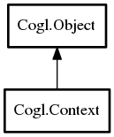

Cogl.Context – doc Reference Manual
Packages
doc
Cogl
Context
Context
get_display
get_renderer
Context
Object Hierarchy:

Description:
public
class
Context
:
Object
Namespace:
Cogl
Package:
doc
Content:
Creation methods:
public
Context
(
Display
? display)
throws
Error
Creates a new
Context
which acts as an application sandbox for any state objects that are allocated.
Methods:
public
weak
Display
get_display
()
Retrieves the
Display
that is internally associated with the given
this
.
public
weak
Renderer
get_renderer
()
Retrieves the
Renderer
that is internally associated with the given
this
.
Inherited Members:
All known members inherited from class Cogl.Object
value_set_object